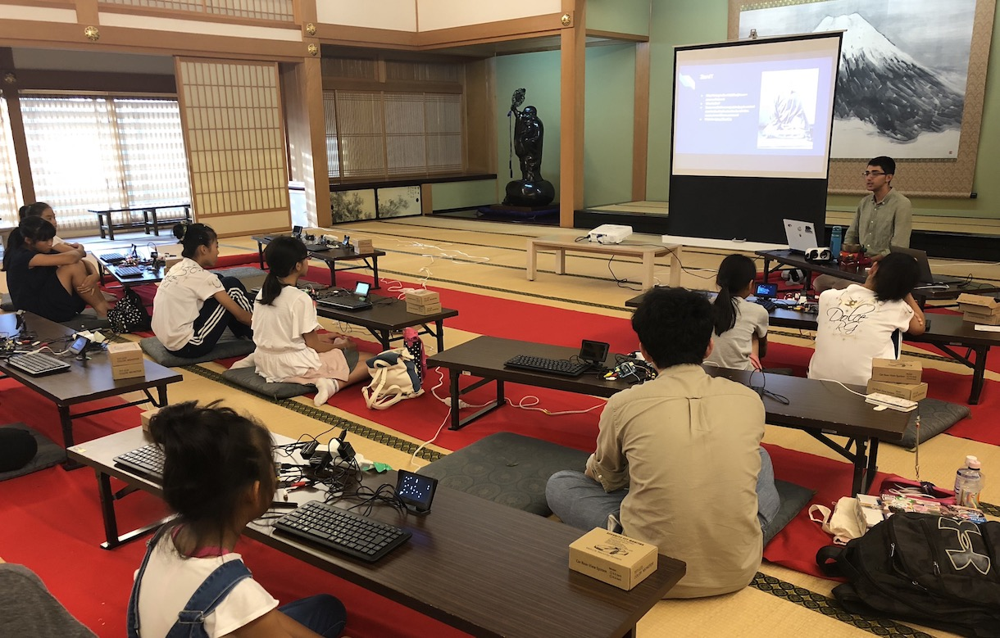
IT, AI, robots, seem far from humans, but actually humans made them.
The best match must be the Zen x Silicon Valley style which keeps our mind and body healthy.
IT、AI、ロボット、人から遠いようで実は人が中心。
心身を健康にする禅とシリコンバレーでのプログラミングスタイルはベストマッチ。
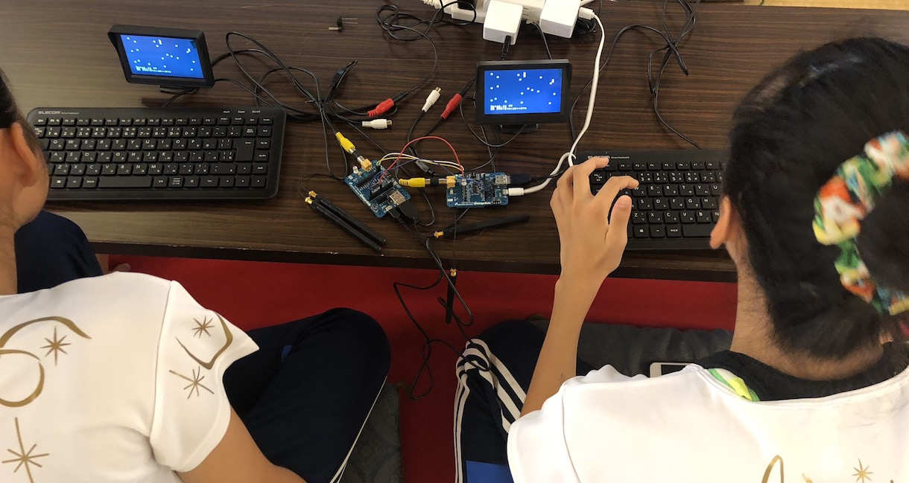
Using two monitors, two keyboards, and one IchigoJam with two people at the same time is Silicon Valley Pair Programming style. We did a neat trick by using one IchigoJam to relay the keyboard and video signals to the other one. (Workshop Slides PDF)
2台のモニター、2台のキーボードで1台のIchigoJamを二人で同時に使うのが、シリコンバレーのペアプログラミングスタイル。
1台のIchigoJamを中継用にちょっと細工します。（ワークショップ、スライド PDF）
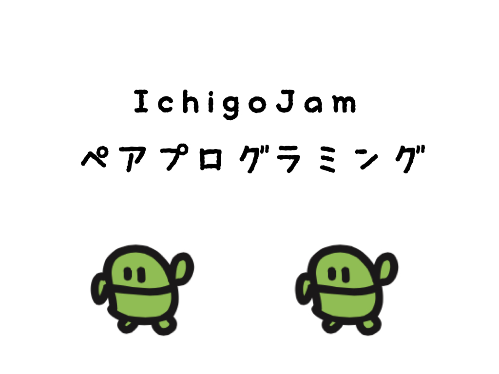
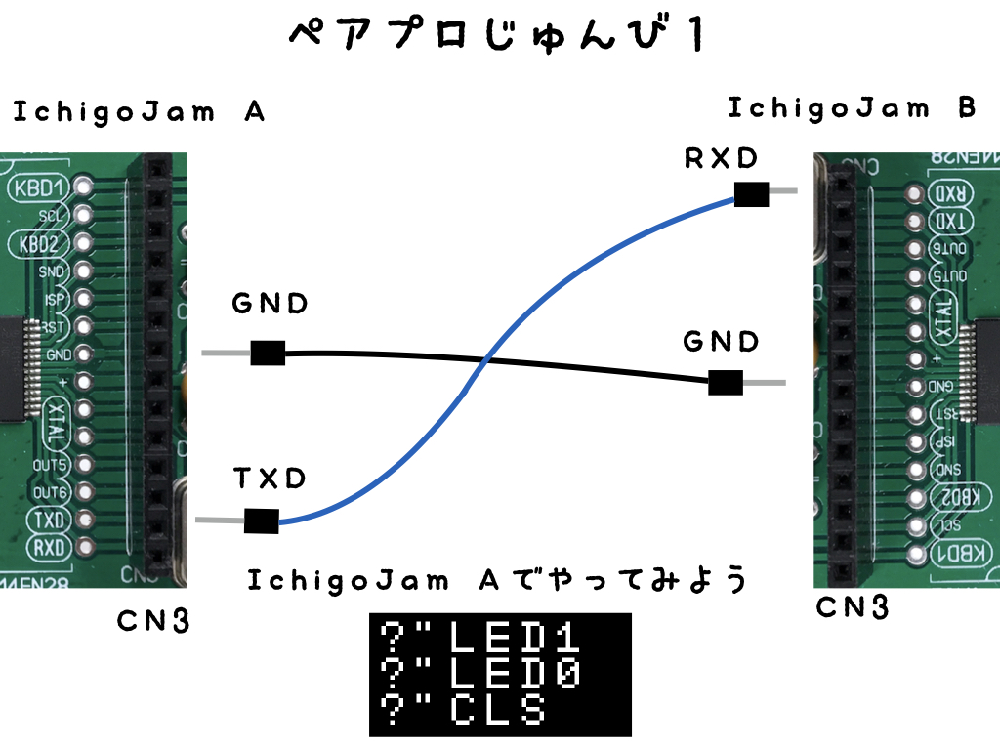
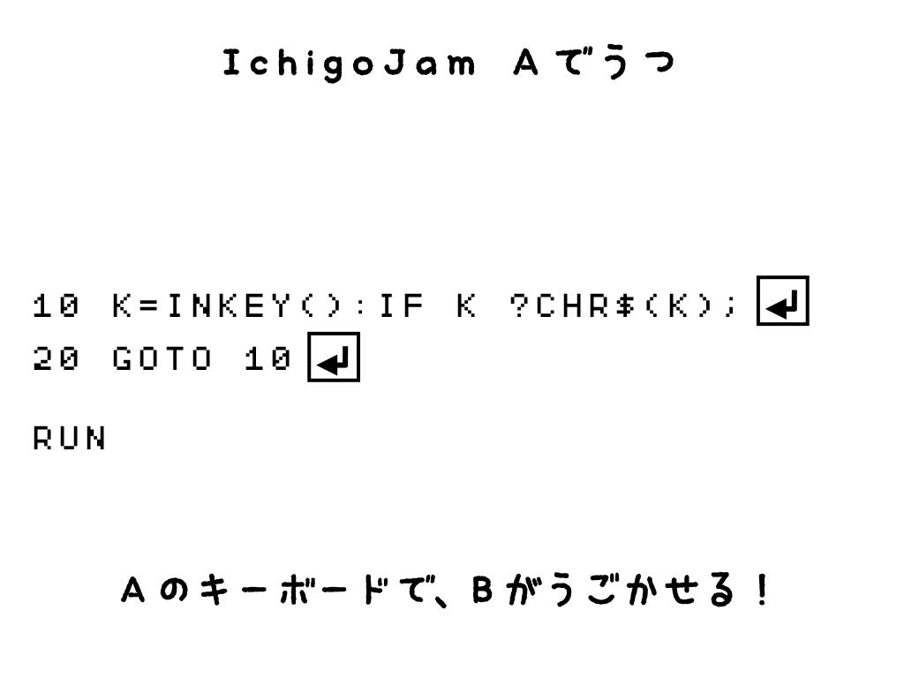
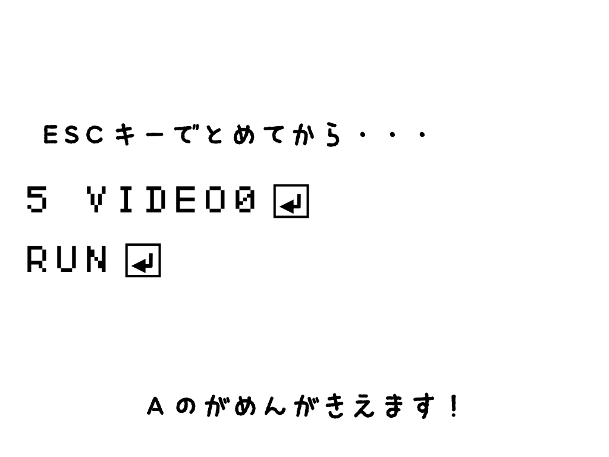
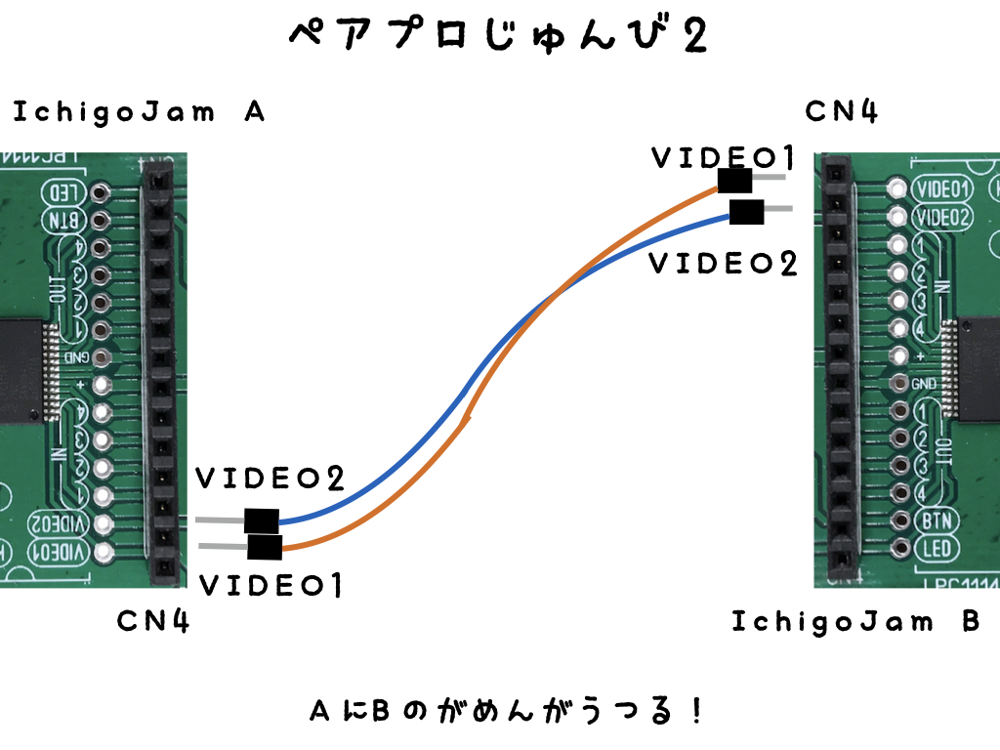
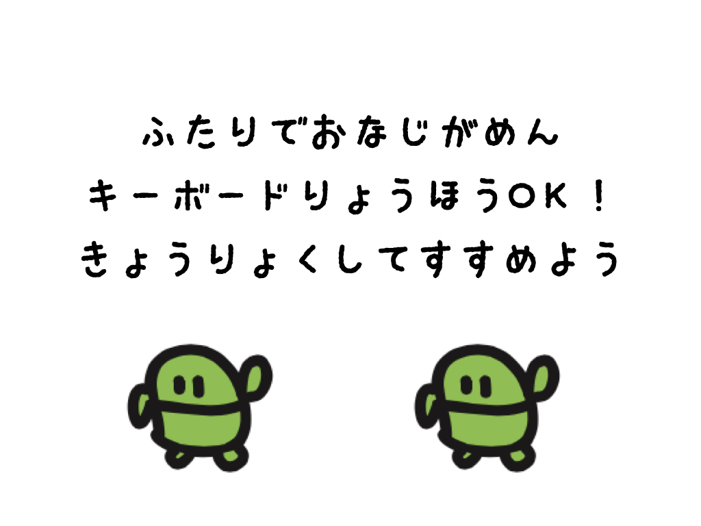
The ESC key does not work on IchigoJam A because the program to transfer the keystrokes would be terminated (at which point you would have to press F5 to run it again).
IchigoJam A's left and right keys toggle the character's movement with two presses, which is a bit strange, so the game should be played with IchigoJam B.
We can fix it by changing the program to use INKEY instead of BTN:
36 K=INKEY():X=X-(K=28)+(K=29)
36 K=INKEY():X=X-(K=28)+(K=29)
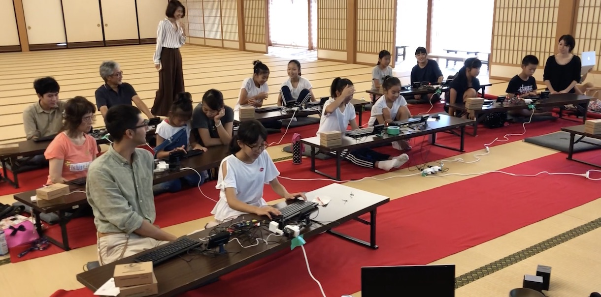
Having fun doing pair programming to make a game for the first time!
ペアで楽しむ、ゲームづくりではじめるプログラミング！
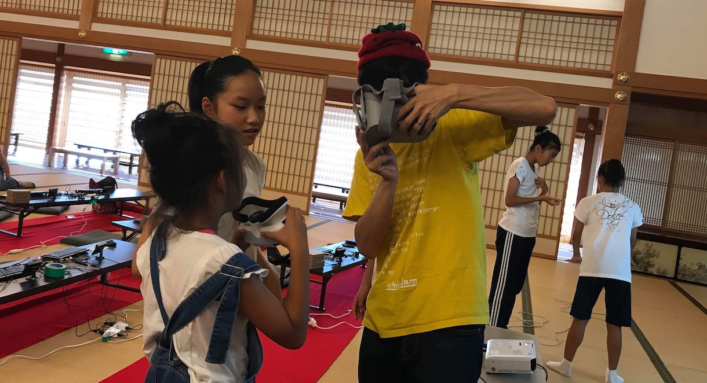
You can also make VR to change what you see with programming! We used Oculus Go and Smartphone MR during the break time.
VRや、視界だってプログラミングできちゃうよ！と休み時間中に Oculus Go や、スマホMRの体験会。
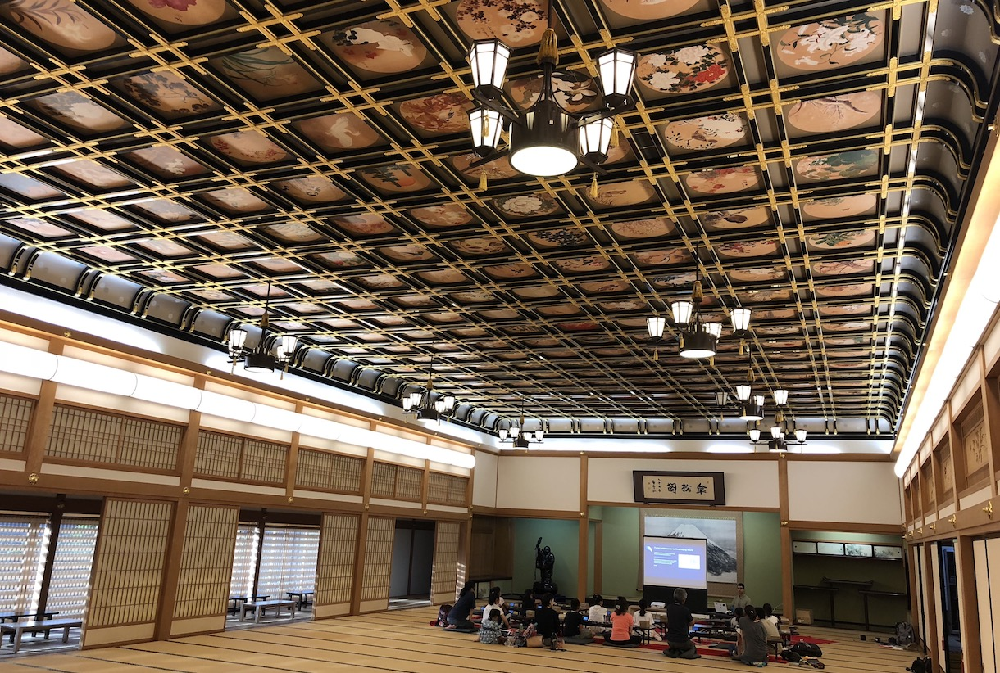
The huge Japanese style room had fantastic pictures on the ceiling!
160畳の広大な和室、見事な天井絵！
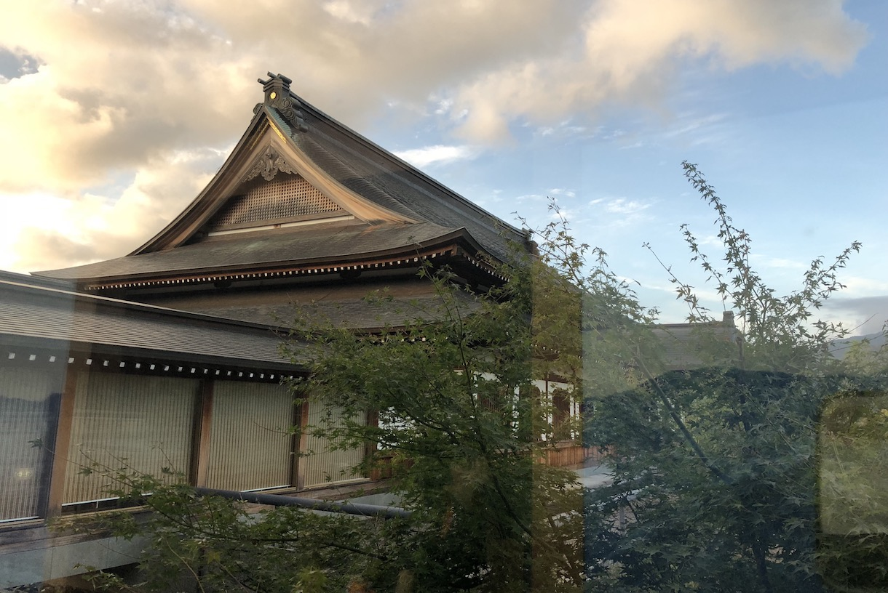
Perfect in Autumun... The Four Seasons Forest Culture Center.
秋晴れが気持ちいい、四季の森会館でした。
Links
- Zen Programming
- Amil's Website (Evolution Ambassador / エボリューション大使)